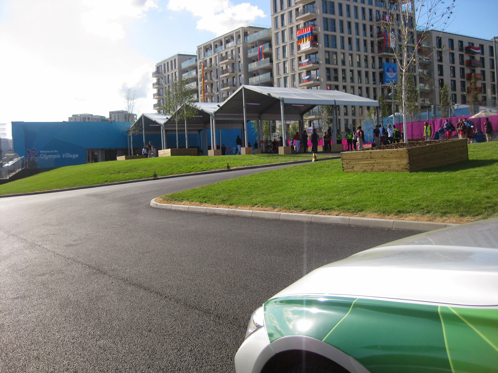

Shift 10 Yellow C200 4.00pm to 2.00am
Friday August 3rd 2012
Early to bed meant early to rise so was awake at 6.15am. Went for a full cooked breakfast to fill me up for the day.
Got back to my room in time to see Jess Ennis kick off her first day in the Heptathlon with a WB/PB and British hurdles record. Would have won
the individual hurdles gold medal in Beijing. She did OK in the high jump so a good lead going into the evening session.
Set off for Newbury Park tube park and ride at 2pm having got £1 coins from the hotel bar in case there is no credit card machine. No problem
parking - POETS day probably helped. Now the athletics has started the only people allowed into Westfield are those working or with tickets.
Had to take the round the outside walk to the stadium as traffic control was in place. As was well early for my shift, I hung about the end of
the entrance bridge to listen to a band that was playing and people-watch. Ended up answering questions about where things were in the park
and taking photos of people with the Park in the background including a Mum and daughter who were convinced they wouldn't get a photo of the
two of them together. They were delighted.

On arrival at FDO was told to have my hot meal (Cajun Chicken Ciabatta) and wait downstairs. Obviously there were no cars to allocate. Found
the 3pm and 3.30pm shifts also waiting for cars. 9 people were selected seemingly at random to do RFT's. At about 3.55pm a despatcher announced
there were cars to be collected. I waited a tad for the early shifts to jump at the chance, but many of them didn't seem interested so I went
to get a car. Headed up stairs following a trip to Shop Mobility to get a headset.
We had Mr Officious team leader who tried to boss any cars in his vicinity. He wasn't happy that I didn't hear our assignments cos I was
fixing the headset in place. Most of them were off to Heathrow to the Northern staging area. I was off to the Village. Security at Alma Street
had been ramped up. Full car check and squaddie insistent that if my water was opened I would have to drink from it in front of him!
Joined the T3 staging queue at about 4.45pm. There was a Mr Bragger in the queue. I know London. I ignore DORS. I know where I am going. One
of the Silver night crew from bag packing night stopped by to say hello and compare client stories. Eventually I made it up to the staging area
after a minor panic that the DORS was playing up. I was tasked to take a Nigerian NOC guy to the Intercontinental Park Lane. He laughed when I
said I had to program the SatNav and called her Doris. Turns out he is a Man Utd fan. The trip to hotel went swimmingly as that route is now
ingrained in my brain.
Drove back to the Olympic Village to queue up again. Got there about 7.50pm. Went into the Olympic Village lobby through the mag and bag to
have a comfort break. Watched Becky Adlington win 800m bronze on the telly in the foyer. Some woman radiod in that she was back at FDO but she
needed to talk to someone about an issue she had. Control asked what the issue was and was told that DORS/SatNav was not working properly all
evening and she had taken 2.5 hours to get from Park Lane to FDO. I had done it earlier in 40 minutes!
Remembered to very quickly phone Mum at 9.15pm as I was at the front of the staging queue. Very quickly moved to the loading zone and asked by
despatcher to ask for 5 more cars to be sent to Olymic Village as her battery was dead. Next up was a trip to Excel. I did ask the guy where he
was from but his English was poor and his accent thick so my best guess is he was East European of some sort. He was T2 but I missed the turn
towards their VSA and ended up delivering him to the T3 spot. At least I discovered the way in which involves heading away from ExCel and
doubling back. Control directed me to Eton Manor.
For the first time in my experience it was busy. I didn't have long to wait before we swung around to join the loading zone and I got a Polish
NOC guy and his wife. They were very chatty, wanting to know how long our shifts were, how long we drove for during the shifts. They had been
to the swimming and watched some athletics in a hospitality lounge. They were looking forward to the men's 100m final on Sunday. Their
accreditation gets them in anywhere. Couldn't get onto the radio to let them know I'd arrived at the family hotels, it was either permanently
busy so I decided to head back to Eton Manor and radio in when I could. I eventually got through to Control as I went past the Tower. Was
complimented on my clear radio message. Once back at Eton Manor it was clear that the rush was over. Very little traffic even with the
basketball finishing at midnight. At 1am we got an all cars message to go back to the FDO and either check out for end of shift or park up and
head to the Driver Lounge. A major convoy formed to get through the VSA. Called in to end shift but had to wait an age as there were lots of
us to give a lift home and they were concerned they had RFT's to do. Eventually 4 of us got a lift. I was first out at Newbury Park. Got back
to hotel at 2.30pm and asleep by 3.00am